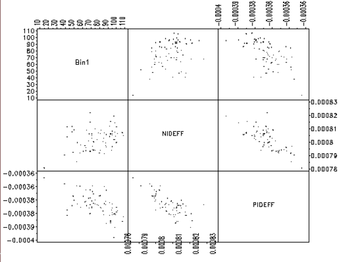

|
3.
Production
Process Characterization
3.4. Data Analysis for PPC 3.4.2. Exploring Relationships
|
|||
| Make scatter plots of all of the response variables | In this first phase of exploring our data, we plot all of the response variables in a pairwise fashion. The individual scatter plots are displayed in a matrix form with the y-axis scaling the same for all plots in a row of the matrix. | ||
| Check the slope of the data on the scatter plots | The scatterplot matrix shows how the response variables are related to each other. If there is a linear trend with a positive slope, this indicates that the responses are positively correlated. If there is a linear trend with a negative slope, then the variables are negatively correlated. If the data appear random with no slope, the variables are probably not correlated. This will be important information for subsequent model building steps. | ||
| This scatterplot matrix shows examples of both negatively and positively correlated variables |
An example of a scatterplot matrix is given below. In this
semiconductor manufacturing example, three responses, yield (Bin1),
N-channel Id effective (NIDEFF), and P-channel Id effective (PIDEFF)
are plotted against each other in a scatterplot matrix. We can see
that Bin1 is positively correlated with NIDEFF and negatively
correlated with PIDEFF. Also, as expected, NIDEFF is negatively
correlated with PIDEFF. This kind of information will prove to be
useful when we build models for yield improvement.
 |
||